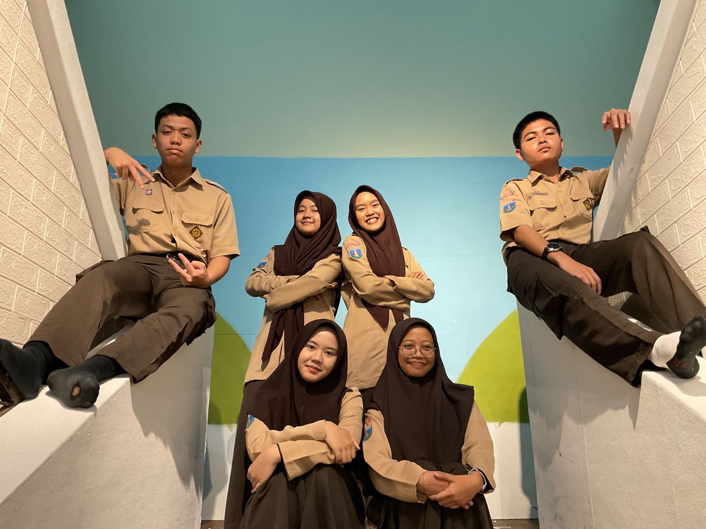
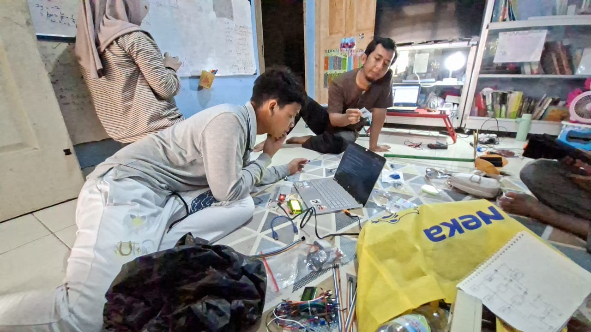
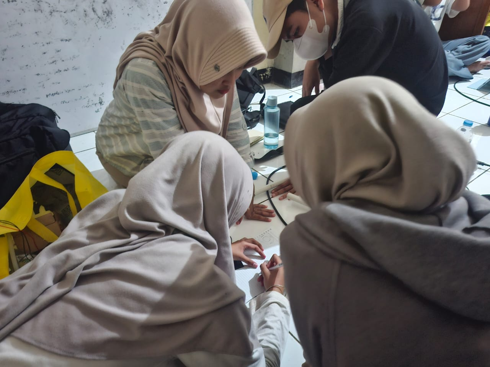

Hello I am VoltraBloom :)
Simultaneous convergence of monocrystalline solar, vertical-axis wind, and soil microbial fuel cells in a single deployable architecture.
Tri-Source Energy Harvesting
VoltraBloom captures renewable energy across three distinct natural spectra simultaneously:
MPPT & Synchronous Rectification
Variable DC from solar, multi-phase AC from wind, and low-voltage bioelectric signals are routed through a multi-stage power conditioning bus. Synchronous buck-boost controllers and high-frequency Schottky rectifiers consolidate erratic environmental surges into a stable 48 V internal charging rail with >94% conversion efficiency.
ESP32 Hybrid HEMS Brain
The onboard ESP32 dual-core microcontroller executes moving-average filtered ADC sampling on isolated ADC1 channels. It computes real-time Coulomb Counting state-of-charge, drives a 20x4 I2C diagnostic LCD, serves direct REST/WebSocket endpoints, and streams telemetry to Supabase Cloud.
LiFePO4 Storage Buffer
Conditioned electrical yield is stored safely into a modular LiFePO4 battery bank with active BMS cell balancing. With 2,000+ lifecycle cycles at 80% Depth of Discharge (DoD), it provides guaranteed continuous buffer power for emergency loads during total grid blackouts.
Pure Sine Inversion & AC Distribution
A pure sine wave inverter switches seamlessly within <10 milliseconds to supply 220 V AC directly to building sub-panels. Sensitive electronics, IoT sensors, and emergency LED lighting run uninterrupted.
Meet Team Voltra
The innovative minds working on the VoltraBloom Hybrid Energy System.


